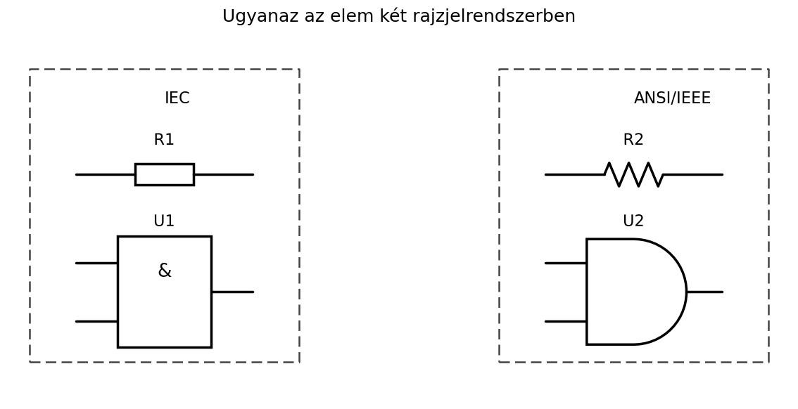
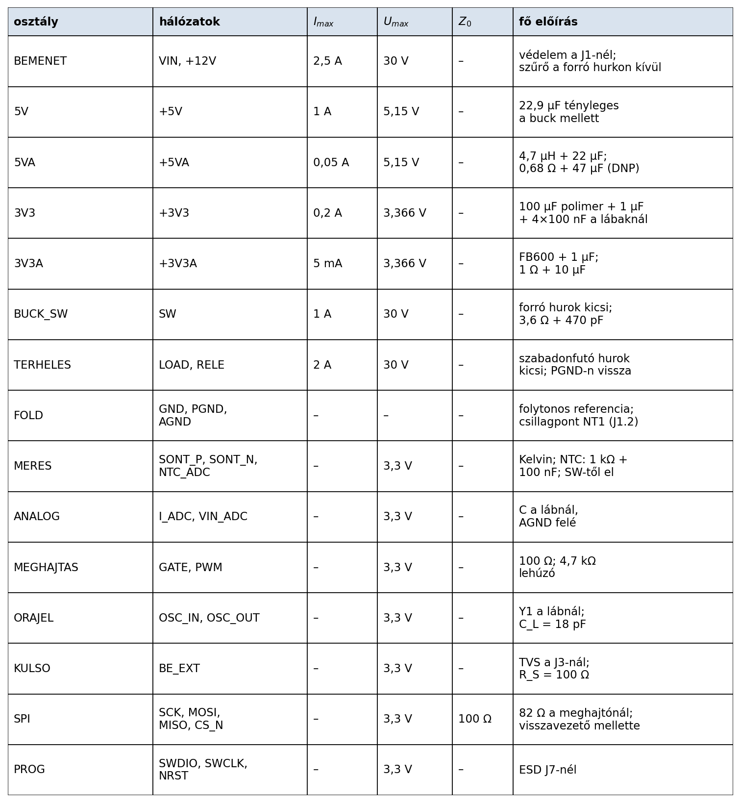
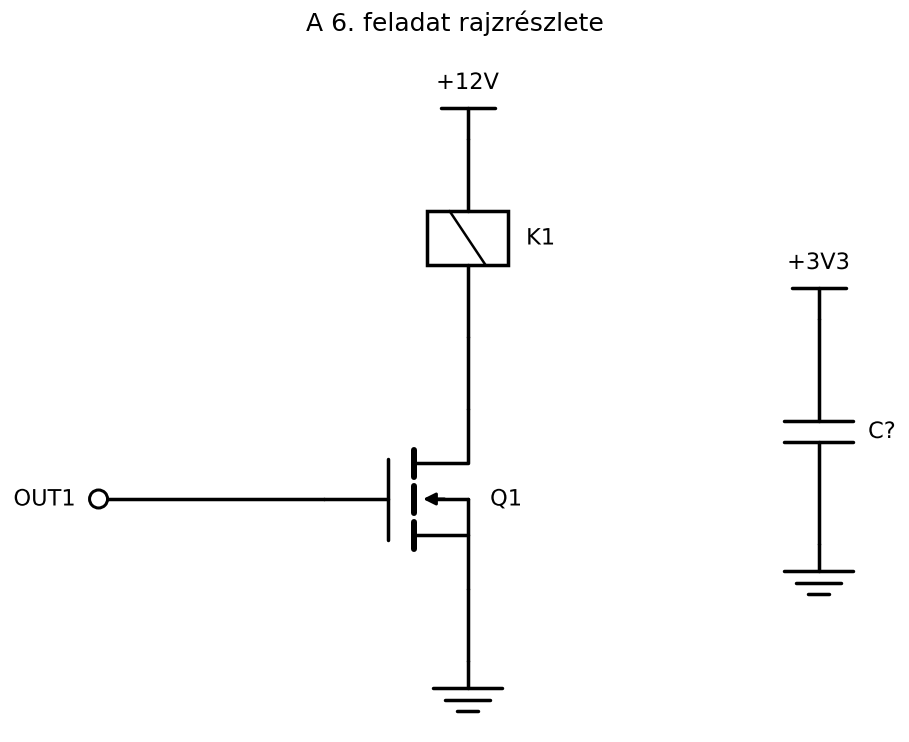

A követelmény és a blokkdiagram megvan; most a döntéseket a kapcsolási rajzra és mellé egy listára írjuk, mert a NYÁK-tervező ezekből dolgozik. Ennek az alfejezetnek a végére:
Építünk A labor és az elkit kódcsomag, a Tokozások: furatszerelt és SMD, az Oszcillátorok, kristályok és órajel, a Hőtervezés és vezetőmelegedés, a Szigetelési távolság és kúszóút, a Földelési stratégiák és visszatérő áramutak, a Zajszűrés: RC, LC, ferrit, közös módusú fojtó, árnyékolás, az ESD- és túlfeszültség-védelem az áramkörben, a Felfutási idő, sávszélesség és távvezetékek, a Reflexió, lezárás és illesztés, a Tápintegritás és hidegítés és a Követelményektől a blokkdiagramig eredményeire.
A szenzormodul rajza átkerül a NYÁK-tervezőhöz. Két hét múlva visszakapod a lapot: a hidegítő kondenzátorok szépen sorban, egy sarokban; a sönt érzékelő vezetékei a nagyáramú pad közepéről indulnak; a PGND és az AGND hat helyen összeér. Minden elektromosan „be van kötve” – és a modul zajos, a mérés hibás. A tervező nem hibázott: a rajz nem mondta meg, hogy ez számít. „Ami a rajzon nincs rögzítve, a NYÁK-on elveszik.”
A kapcsolási rajznak két olvasója van. Az ember a működést akarja megérteni: honnan jön a jel, merre megy, mi mire való. A gép csak annyit olvas ki, melyik alkatrész melyik lába melyik hálózathoz tartozik. A jó rajz mindkettőnek jó. Olyan, mint a kotta: a hangjegyek (a netlista) egyértelműek, a dinamikai jelek és a tempó (a megjegyzések, kényszerek) mondják meg, hogyan kell eljátszani. A hasonlat ott sántít, hogy a kottát a zenész kijavíthatja játék közben, a rosszul rögzített kényszert viszont csak egy új laptervezés.
A számozott javítások:
A könyv az IEC 60617 szellemében rajzol (téglalap ellenállás, téglalap logikai kapu). Észak-amerikai anyagokban az ANSI/IEEE gyakorlat (IEEE 315; ellenőrizendő: a hatályos kiadás) terjedt el: cikcakkos ellenállás, jellegzetes alakú kapuk.

Egy rajzon (és egy projektben) egy rendszert használj. A kondenzátor, a dióda és a tranzisztor jele a két rendszerben nagyrészt hasonló; a jelmagyarázat a bizonytalan helyeket tisztázza.
Definíció. A referenciajelölő (reference designator) betűjelből és sorszámból álló egyedi név, amely a rajzot, a darabjegyzéket és a lapot összeköti. A szokásos betűk (IEEE 315, illetve az IEC 81346 elvei; ellenőrizendő: a saját szervezet szabálya):
| Jel | Alkatrész | Jel | Alkatrész |
|---|---|---|---|
| R, RT | ellenállás, termisztor | U | integrált áramkör |
| C | kondenzátor | J | csatlakozó |
| L, FB | tekercs, ferritgyöngy | F | biztosíték |
| D | dióda, LED, TVS | Y | kristály |
| Q | tranzisztor, MOSFET | TP | tesztpont |
Hierarchikus (több lapos) rajznál lapszámos sorszám segít: a 3. lapon R301, R302. Azonos jelölő kétszer nem szerepelhet.
Definíció. A hálózat (net) azoknak a lábaknak a halmaza, amelyeket vezető köt össze; a netlista (netlist) a hálózatok és az alkatrészek lábainak listája. A rajzon az azonos hálózatcímkével ellátott pontok akkor is egy hálózathoz tartoznak, ha nem húzunk köztük vonalat.
Szabályok:
_N: CS_N);A rajzon (vagy a hozzá kötött BOM-ban, bill of materials, alkatrészjegyzékben) minden alkatrésznek van értéke, tűrése, névleges feszültsége vagy teljesítménye, tokja, kondenzátornál dielektrikuma, és gyártói cikkszáma (MPN); lásd Tokozások: furatszerelt és SMD. Egy „100 nF” bejegyzés 6,3 V-os Y5V-t is jelenthet.
DNP (do not populate, nem beültetendő): a hely a lapon megvan, az alkatrészt nem szerelik be (opcionális lezárás, szűrőhely, 0 Ω-os átkötés). A rajzon is jelölni kell, különben a gyártásban vagy beültetik, vagy a tervből eltűnik.
A kényszert oda írd, ahol keletkezik: „C3: U1 VDD1 lábához, rövid hurok”. A tesztpont (test point, TP) saját jelölőjű alkatrész, amely a prototípus méréséhez kell: minden tápsín, a GND és a kulcsjelek (LOAD, NTC_ADC, I_ADC).
A rajzolóprogram netlistát és darabjegyzéket készít (a KiCad is így működik; a kezelése nem a könyv témája). A netlista nem tartalmaz koordinátát, hosszt, hurokméretet: ezek a NYÁK-tervező döntései. A szimulátor ugyanilyen listából dolgozik; a SPICE-alakot a Szimuláció és ellenőrzés mutatja be.
Definíció. A kényszerlista a NYÁK-tervezésnek átadott, ellenőrizhető követelmények listája, hálózatosztályonként (azonos követelményű hálózatok csoportja).
| Kényszer | Forrás | Mit adunk át |
|---|---|---|
| áramigény, megengedett esés | teljesítménymérleg | , ; a szélesség az IPC-2152 szerint (ellenőrizendő) |
| szigetelési határ | Szigetelési távolság és kúszóút | légköz, kúszóút, bemenő adatok, szabvány |
| impedancia, lezárás | Reflexió, lezárás és illesztés | , lezáró ellenállás helye |
| hidegítés | Tápintegritás és hidegítés | melyik kondenzátor melyik lábhoz |
| föld, visszaút | Földelési stratégiák és visszatérő áramutak | földnevek, csillagpont |
| forró hurok, érzékeny jel | Csatolási mechanizmusok és áthallás, A buck konverter | hurok elemei, elkülönítés |
| védelmek helye | ESD- és túlfeszültség-védelem az áramkörben | „közvetlenül a csatlakozónál” |
| órajel | Oszcillátorok, kristályok és órajel | , legnagyobb , meghajtási korlát |
Jó kényszer: mérhető („a hurok induktivitása legfeljebb 12 nH”) vagy egyértelműen ellenőrizhető („a szabadonfutó dióda katódja a sönt előtt, a +12V-on”). A „legyen rövid” gyenge, de jobb a semminél, ha megmondja, mely elemekre vonatkozik.

Ha a modulon elválasztott oldalak vannak (a Szigetelési távolság és kúszóút leválasztott
bemenete, 60 V effektív), a határ külön szigetelés típusú
sor, külön hálózatnevekkel (GND_P, GND_S) és kerettel a rajzon; a
mintaszámok (megerősített: légköz 1,0 mm, kúszóút 3,04 mm)
mintaadatok, nem szabványértékek (ellenőrizendő: IEC
62368-1, IEC 60664-1).
A könyv ~~~circuit blokkjai is ezt a rendet követik:
label a jelölő, value az érték,
label típusú elem a hálózatcímke, supply a
tápjel, ground a föld, dots a csomópont,
frames a szaggatott határ- vagy blokkeret,
uarrow a feszültségnyíl. A kapcsolási rajz
adat: ellenőrizhető és verziózható.
Továbbvitt eredmény. A kapcsolási rajz egyértelmű jelölőkkel, értékekkel, attribútumokkal és beszédes hálózatnevekkel készül, a NYÁK-ra vonatkozó követelmények pedig hálózatosztályonkénti kényszerlistába kerülnek (áram, szigetelés, impedancia és lezárás, hidegítés, föld, hurkok, védelmek). Erre épít a Szimuláció és ellenőrzés, a Tervezési átvizsgálás és átadás a NYÁK-tervezésnek, az 1. záróprojekt: védett tápegység 12 V-ról 5 V-ra és 3,3 V-ra, a 2. záróprojekt: érzékelő-illesztő és mérőlánc és a 3. záróprojekt: MOSFET-es meghajtó induktív terheléshez.
1. Tápvezeték (+12V). A, a csatlakozótól a söntig megengedett esés legfeljebb 50 mV (saját követelmény): mΩ. Ellenőrzés a NYÁK-tervezőnek: 10 cm, 35 µm réz esetén mm. A kényszerbe az áram és az esés kerül; a szélességet a melegedés is korlátozza (IPC-2152, ellenőrizendő).
2. A buck forró hurka. Feltevés: a kapcsolási él ns, a megszakított áram 1,29 A (a tekercs csúcsárama), a megengedett túllövés 3 V. nH. Kényszer: „C_be–kapcsolók hurok ≤ 12 nH, a lehető legkisebb” (a Mágneses tér és induktivitás képletével).
3. SCK-lezárás. m/s, cm. A 0,5 m-es kábel hosszabb, tehát a kényszerbe: Ω, soros 82 Ω a meghajtó lábánál.
4. Gate-lehúzó. Belső felhúzóval (min. 25 kΩ) V V (): jó. 100 kΩ-mal V: a MOSFET bekapcsolna. Vezérléskor a 100 Ω / 4,7 kΩ osztó V-ot ad, ami fölötte van a garantált 2,5 V-os pontjának.
Józanész-ellenőrzés: mind a négy szám visszavezethető egy követelményre vagy adatlapi mintaadatra; egyik sem „szokás”.
Az elkit.review NetClass sorai a
kényszerlista; a check_constraints hiányosságot keres, és
ha megadod a rajz hálózatait, a besorolatlanokat is.
from elkit import extra_elch24 as x, review
lista = x.module_constraints()
print(len(lista), "osztály;", review.format_findings(
review.check_constraints(lista, design_nets=x.MODULE_NETS)))
rajz = x.MODULE_NETS + ("EN5V",) # új jel került a rajzra
hibas = [c for c in lista if c.name != "3V3A"] # egy sor kimaradt
hibas.append(review.NetClass("BUCK2", "nagyáramú", ("SW2",))) # nincs áram, nincs a rajzon
print(review.format_findings(review.check_constraints(hibas, design_nets=rajz)))15 osztály; összesen: 0 kritikus, 0 fontos, 0 ajánlott
kritikus BUCK2 hiányzik a legnagyobb áram
fontos BUCK2 a rajzon nincs SW2 nevű hálózat
ajánlott +3V3A a hálózat egyik osztályban sincs
ajánlott BUCK2 nincs útvonal-/elhelyezési előírás
ajánlott EN5V a hálózat egyik osztályban sincs
összesen: 1 kritikus, 1 fontos, 3 ajánlottA négyféle találat a lista négy tipikus hibája: hiányzó áram,
besorolatlan hálózat, a rajzon nem létező hálózat, hiányzó elhelyezési
előírás. Egy leválasztott oldalhoz tartozó sor (mintaadat) – próbáld ki,
mit ír ki, ha törlöd az isolation szöveget:
izo = review.NetClass("HATAR", "szigetelés", ("BE", "GND_P"), voltage=60.0,
isolation="megerősített: légköz ≥ 1,0 mm, kúszóút ≥ 3,04 mm "
"(mintaadat; ellenőrizendő: IEC 62368-1)")
print(review.format_constraints([izo]))
print(review.check_constraints([izo]))HATAR [szigetelés]: BE, GND_P
U_max = 60 V
szigetelés: megerősített: légköz ≥ 1,0 mm, kúszóút ≥ 3,04 mm (mintaadat; ellenőrizendő: IEC
62368-1)
[]A rajz gépi olvasata a gate-körre:
from elkit import netlist as nl
n = nl.Netlist("gate-kör")
n.resistor("R1", "PWM", "GATE", 100).resistor("R2", "GATE", "PGND", 4700)
n.mosfet("Q1", "LOAD", "GATE", "PGND")
for sor in n.line_map():
print(sor["ref"], "→", ", ".join(sor["nodes"]))
print({net: tuple(v) for net, v in n.nodes().items() if net == "GATE"})R1 → PWM, GATE
R2 → GATE, PGND
Q1 → LOAD, GATE, PGND, PGND
{'GATE': ('R1', 'R2', 'MQ1')}A MOSFET negyedik csomópontja a test (bulk), itt a source-szal közös;
a SPICE-név MQ1, mert a SPICE az elemnév első betűjéből
olvassa a típust.
A rossz és a jó rajzhoz kattintós hibakereső tartozik.
| Tünet | Ok | Javítás |
|---|---|---|
| Két azonos nevű, mégis különböző vezeték zárlatba kerül | ugyanaz a címke két jelre | egyedi, beszédes nevek; ERC-jellegű (elektromos szabály-) ellenőrzés és átvizsgálás |
| „Lóg” egy logikai bemenet, a modul véletlenszerűen reagál | hiányzó fel- vagy lehúzó | minden bemenet meghatározott szintű reset alatt is |
| Beültetnek egy opcionális lezárást, a jel torzul | a DNP nincs jelölve | DNP-jel a rajzon és a BOM-ban |
| A hidegítő kondenzátorok messze az IC-től | a rajzon egy blokkba gyűjtve, kényszer nélkül | a lábhoz rendelve, megjegyzéssel és kényszerrel |
| A tervező nem tudja, melyik föld melyik | egyetlen GND a teljesítmény- és mérőágon | PGND, AGND, GND névvel, csillagpont-megjegyzéssel |
Gyakori félreértés: „ha a netlista helyes, a lap is jó lesz”. A netlista csak azt mondja meg, mi mivel van összekötve; a hurok mérete, a visszatérő út és a távolság nem benne van.
táp és nagyáramú sorra ellenőrzi, hogy
a megadott áram nem kisebb-e a teljesítménymérleg legrosszabb sarkának
áramánál (a +12V, +5V, +3V3 sínekre).
A kapcsolási rajz embernek és gépnek is szól: balról jobbra futó jelek, egyedi referenciajelölők, érték és attribútumok, beszédes hálózatnevek, elnevezett tápok és földek, DNP-jelölés, tesztpontok. A netlista csak az összeköttetést viszi át; a NYÁK-ra vonatkozó követelményeket hálózatosztályonkénti kényszerlista rögzíti: áram és esés, szigetelés, impedancia és lezárás, hidegítés, föld és csillagpont, forró hurkok, védelmek helye, órajel. A jó kényszer mérhető vagy egyértelműen ellenőrizhető, és visszavezethető egy számításra: a szenzormodulban 1,85 A, legfeljebb 12 nH-s forró hurok, 82 Ω soros lezárás, 4,7 kΩ-os gate-lehúzó. Erre épül a szimuláció, az átvizsgálás és a három záróprojekt.
1. D1 (TVS; a D betű a diódacsaládra), L1, J7 (a modul programozó csatlakozója), TP3 (vagy a saját sorszámozás szerint), Y1, FB1.
2. NTC_RAW: R1.1 (és a bemenet); NTC_ADC: R1.2, C1.1, a mikrovezérlő ADC-lába; AGND: C1.2.
3. Osztály: RELE, típus: nagyáramú (a tekercs árama
miatt elég a jel is, ha az esés nem kritikus); hálózatok:
RELE;
= 48,5 mA (a 16 V-os, hideg sarok, nem a 30 mA-es névleges érték);
= 30 V (tesztimpulzus); elhelyezés: „a szabadonfutó dióda a J5 mellett,
a tranzisztor–dióda–J5 hurok kicsi; visszatérés a PGND-n”. A
bázisellenállás és a lehúzó a meghajtás osztályába kerül.
4. m/s; cm. A 15 cm-es vezeték rövidebb: a hüvelykujjszabály szerint nem kötelező a lezárás, de a határ közel van; érdemes egy DNP-s soros ellenállás helyét kihagyni.
5.
def aramhiany(lista, u=16.0, t=-20.0):
sarok = x.corner_budget(u, t)
out = []
for c in lista:
for sin in ("+12V", "+5V", "+3V3"):
if sin in c.nets and c.current is not None and c.current < sarok[sin].i_out:
out.append((c.name, sin, c.current, round(sarok[sin].i_out, 3)))
return out
print(aramhiany(x.module_constraints()))[]Üres lista: minden sín kényszerében a megadott áram legalább a sarok árama (a +12V sornál 2,5 A, a biztosíték névleges árama, tehát a védelem határa a mérvadó).
6. (1) K1-nél nincs szabadonfutó dióda: lekapcsoláskor a MOSFET túlfeszültséget kap (induktív terhelés hiányzó befogással). (2) A gate-en nincs lehúzó (és soros ellenállás): reset alatt lebeg. (3) C? jelölő és érték nélkül, ráadásul nem tudni, melyik tápláb hidegítése. (4) Az OUT1 hálózatnév semmit nem mond a funkcióról (például RELE_VEZ lenne jobb), és a teljesítményág földje (PGND) nincs megkülönböztetve.